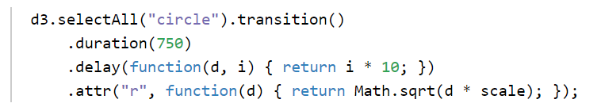
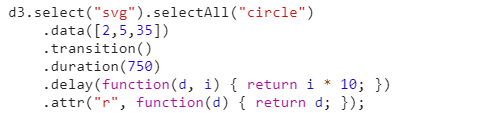
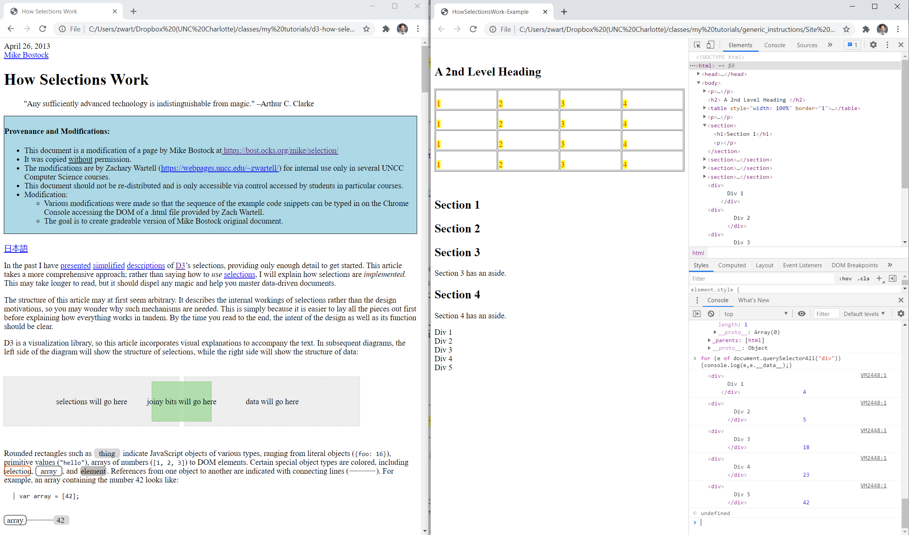

ITCS : - D3 Tutorial
Spring 2021
Professor: Zachary Wartell
Revision: 1.0.11
(git logs)

"ITCS : Generic Instructions" by Zachary Justin Wartell is licensed under a Creative Commons Attribution-NonCommercial-ShareAlike 4.0 International License.
Compatibility
This page has been tested on Chrome.
Objectives
- Read and play with tutorial code snippets on D3 and create some trivial HTML5 pages with D3.
- Read and play with tutorial code snippets on SVG.
- Develop very minimal understanding of SVG.
- Develop a basic understanding of D3.
Document Configuration
Parts of this document contains notes only useful to teaching staff. Students should leave these parts non-visible.
Overview
Total number of points for the project is 150 (see Rubric Table for a tabular summary).For this project you will both:
- Create a number of small HTML5 pages
- and
- Try out and experiment with a variety of code snippets embedded in the reading.
You will create the HTML5 pages using your preferred code editor or IDE. (For brevity, the term IDE
will be used to refer to either such tool).
You will perform your experiments with the code snippets by using the
Chrome debug Console and then saving the Console log files to record
your work. All files are submitted through git..
Guide to Reading these Instructions
This tutorial using the same conventions and features used in earlier tutorials which are described at:
Coding Standards:
Section:Part of your project grade will be based on following good programming practices. Including the following:
- git commit
-
- There should be at least one descriptive git commit message associated with your achieving each of the requirements below that ends with the statement git commit.
- Good programming practice would suggest you should be making additional commit messages, as you develop your code and debug it, etc.Think of your git commit messages as professional journal or blog.
- Remember, it is common practice to git commit frequently but to only git push occasionally.
Git Repo
Exercise: Git Repo- Create a new remote repository on the Git server called "__.
- Remember to make your remote repository "Private" .
- Remember to give the TA and Professor "Reporter" Access.
- Now clone your remote repo:
lucretius@Monad42 ~/ITCS_/
$git clone https://cci-git.uncc.edu/your_user_id/3120_P2_Planet_Mobile.git2
Cloning into 'Project_X'...
warning: You appear to have cloned an empty repository.
Chrome Console Log - Chapter Procedure
For a number of Chapters that you will read, you will be saving one
Chrome Console log file per Chapter.
If you take a prolonged break in your progress in the middle of a
Chapter, save the Chapter's log file into multiple per-Chapter logs
files, with names like chapter-2-part-1-log.txt,
chapter-2-part-2-log.txt, etc.
Details
For each reading Chapter or tutorial Section where the instructions explicitly indicates you must use the Console Log feature, you should setup the Console and log for that chapter as described in the video and written instructions below.
- Viewing the Video: The video in the Video sub-section below can be controlled both using the standard video controls and by using the cue buttons () next to each step in the succeeding Instructions sub-section, Pressing a step's cue button () jumps to the corresponding video segment.
- Adjusting Video Size: You can independently adjust the displayed size of the Video sub-window and the Instructions sub-window in order achieved your preferred balance of the screen real estate alotted to their two sub-windows. Hover the mouse over the lower-right corner of either sub-section's black border and the mouse cursor changes to a double vertical arrow which enables the resizing.
Video
Instructions
- Procedure:
"Chapter Console Log Setup"
- Open the Chapter's hyperlink in a Chrome tab.
- In Chrome, open Chrome DevTools window
- Initialize the Console as follows:
- Open the Console via "Show console drawer"
-
In the Console Settings Panel, enable "Preserve
Log"
Note: Without this your log file may fail to record your Console activity! - Clear the Console log from any Console input from the prior chapters.
Purpose: You will use the Console to enter and experiment with single-line pieces of code from the referenced reading.
- Create a Snippet as follows:
- Open the Sources Panel
- Open the Snippet tab
- In
the Snippet tab create a "New snippet"
Purpose: You can use the Snippet feature to enter and experiment with multi-line pieces of code from the referenced reading.
- Procedure: Perform the logged exercises described
in the tutorial section.
- Demonstration: In the video the user is performing part of one of the exercises in this tutorial typing in code alternately at the Console and using the Snippet.
- Procedure:
"Save Chapter or Section Console Log File"
- Save the Console to a log file based on the chapter or section name such as, ConsolePlay1.log.
- Verify the log file looks correct using the shell.
- Git commit the log file(s) with an appropriate message such as "-log file for Console Play 1"
Part I
D3 - Console Play 1
Section:This part involves reading the introduction at https://d3js.org/, creating small HTML5 page and trying out and playing with tiny code snippets from the reading in the Chrome Console.
- Create a directory ConsolePlay1 inside your directory Project_2
- Inside ConsolePlay1, create bare
bones HTML file ConsolePlay1.html
- Exercise: ConsolePlay1.html
- Add 5 paragraph elements to the body. In the first paragraph, include an short, joke that would be appropriate for sharing with the class.
- git commit with message 'preliminary files'
- Exercise: ConsolePlay1.html
- [https://d3js.org/] Read the first paragraph. Add the suggested <script> element to your ConsolePlay1.html
- d3js#Introduction Read all.
- Use the "Chapter Console Log Setup" procedure to prepare the Console and Console logging.
- d3js#Selections
Read all.
- Exercise: Selections
Type in the example code snippets in this section on the Console.
Optionally, also experiment a bit with variations of these snippets.
- Exercise: Selections
- d3js#Dynamic
Properties: Read all. While reading do the following
exercise.
- Exercise: Dynamic Properties
Type in the example code snippets in this section on the Console.
Optionally, also experiment a bit with variations of these snippets.
- Exercise: Dynamic Properties
- d3js#Enter
and Exit: Read all. While reading do the following exercise.
- Exercise: Enter and Exit
Type in the example code snippets in this section on the Console.
Optionally, also experiment a bit with variations of these snippets.
- Exercise: Enter and Exit
- d3js#Transformation, Not Representation: Read all.
- Using your IDE, modify the file ConsolePlay1.html
as follows:
- Inserting the following element after the last <p>
element:

- Save the file changes.
- Refresh the page in the Chrome browser to see the change. You should see 3 colored circles at the bottom of the page.
- git commit with message '-added svg element'
- Inserting the following element after the last <p>
element:
- d3js#Transistions:
Read all. While reading do the following exercise.
- Exercise: Transitions
Errata:
In this steps readings, when you reach the code below, use the Replacement: code instead:
Original:

Replacement:

While reading through this section, type in the example code snippets on the Console.
Optionally, experiment a bit with variations of these snippets.
- Exercise: Transitions
- Save Console log to file console-play-1-log.txt.
- git commit all changes with message 'completed D3 - Console Play 1'
SVG - Play
Section:D3 has is own set of Shape primitives (d3-shape). However, underneath the covers D3 is by and large relying on SVG for all graphical rendering Also there will be occasions when a developer will discover the D3 Shape primitives do not provide some desired capability, in which case the developer could directly use SVG (or WebGL depending on the goal). Therefore, this tutorial section walks you through a few exercises to impart a minimal understanding of SVG.
- Create a directory SVGPlay inside your directory Project_2
- [MDN SVG Getting_Started] Read all
sub-sections up to, but not including "A word on
Webservers" and using your IDE create the mentioned files in
directory SVGPlay
- Exercise: demo1.svg
-As described in the MDN reading, create the file demo1.svg, etc.
-Git add and commit the file(s) with message "-completed MDN SVG intro"
- Exercise: demo1.svg
- [MDN SVG Position] Read all.
- In you IDE, create a webpage, SVGPlay.html inside
the directory SVGPlay.
The HTML page will have the capabilities described in the
exercises below.
- Exercise: SVGPlay.html
-Give the page a visible title and display your name as author.
-Copy the the svg element from demo1.svg into SVGPlay.html.
-Git add and commit the file(s) with message "-initial .html page"
- Exercise: Pan and Zoom
Based on your reading above in [MDN SVG Position] -- and knowledge of HTML, JavaScript, the DOM, EventListeners,etc. -- add the following pan and zoom interface to SVGPlay.html. Create additional files (JavaScript, etc.) as needed.
-key 'w' : pan the viewbox upward
-key 's' : pan the viewbox downward
-key 'a' : pan the viewbox left
-key 'd' : pan the viewbox right
-key 'r' : zoom in (by shrinking the viewbox).
-key 'f' : zoom out (by enlarging the viewbox).
-Git add/commit the file(s) with message "-implemented SVG pan & zoom interface"
- Exercise: SVGPlay.html
- [MDN
SV Basic_Shapes] Read all. While reading add at least
one example of each described shape to SVGPlay.html
- Exercise: More shapes SVGPlay.html
-While reading add at least one example of each described shape to SVGPlay.html
-Git add/commit the file(s) with message "-more shapes"
- Exercise: More shapes SVGPlay.html
Part II
D3 - How Selections Work
Section:- Create a directory D3Selections inside your directory Project_2
- Download the following two files: HowSelectionsWork-Example.html, HowSelectionsWork-Example.css,.
Copy them to directory D3Selections
Git add and commit the file(s) with message "-initial D3 Selections files" - Open the file HowSelectionsWork-Example.html
in Chrome and follow the Chapter
Console Log Setup procedure so you can use the Console to
explore and modify the DOM of this .html page.
- In your top level class directory, clone the modified version
of Mike Bostock's "How Selections Work" article.
lucretius@Monad42 ~/ITCS_/
$git clone https://cci-git.uncc.edu/zwartell/d3-how-selections-work.git
Cloning into 'd3-how-selections-work'...
- ["How Selections Works"] Open the article (d3-how-selections-work/index.html) in
a separate window. Arrange this
separate Chrome window side-by-side with the Chrome window
displaying HowSelectionsWork-Example.html
(see Figure 1 below). While reading the article, perform Exercise 5.a below.

Figure 1: Dual Browser Arrangement for Step 5 - Exercise: "How Selections
Works"
- While reading the article, use the Chrome Console in the browser displaying page HowSelectionsWork-Example.html (right-side browser in Figure 1) and enter all the example code in the "How Selections Works" article (left-side browser in Figure 1).
- When you are complete, save the Console log to a file named D3Selections.log following the Save Section Console Log File procedure.
- Git add and commit the file(s) with message "-completed D3Selection section"
- Exercise: "How Selections
Works"
D3 - A Simple Example
Section:[3/12/2021
- 12:05am] Section Under Construction
This section will contain a sequence of exercises in which you will incrementally be guide in creating a simple D3 Visualization.
This will be the final section of the tutorial.
After completing the tutorial, you will be prepared for the Programming Assignment "P1: D3 Visualization" in which you will be given a set of general software requirements and then you will individual required develop all the code to meet the software specification.
- x
- [MDN SVG Getting_Started]
- Exercise: exercise_name
-[details]
-Git add and commit the file(s) with message "-[message]"
- Exercise: exercise_name
- [MDN SVG Getting_Started]
- Exercise: exercise_name
-[details]
-Git add and commit the file(s) with message "-[message]"
- Exercise: exercise_name
Appendix I: Rubric
[3/12/2021
- 12:05am] Section Under Construction
The rubric is generated from the "[x pts]" labels next to each of the tutorial Exercise:'s.
ZJW: 3/12/2021: The rubric is nearly complete.
| Tag | Name | Short Description | Points |
| Total | 150 |
Appendix II: Academic Integrity
See the course syllabus regarding partial credit and the late penalty policy.
This is an individual student project. Each student should be writing and submitting their own code.
Students can discuss general aspects of the various API's (WebGL, HTML5, etc) with each other and this is strongly encouraged. Discussing algorithm's at the pseudo-code level is also acceptable.
However, it is not permissible:
- to copy code from other students
- copy code implementing entire functions or entire algorithms from Internet resources
- to copy code from other students from prior semesters
- translate an algorithm found on the Internet implemented in programming X and re-write it in language Y.
For example, Objective 4 is to demonstrate the student's ability to understand a geometric computation at the diagrammatic, algebraic and pseudo-code level and then implement code that solves that geometric problem. Copying code from the Internet that already implements the algorithm (1) does not demonstrate programming ability nor the ability to translate geometric computation from a high-level description to code and (2) constitutes plagiarism if the resource is not cited immediately next to the copied code segment. For these reasons this would violate academic integrity.
If you have questions about whether using a particular resource is acceptable or not, email the TA and/or Professor.
Appendix III: [Teaching Staff Only] Notes
- Sequence
- Taste of D3 - https://d3js.org/
- instructions
- create directory "ConsolePlay1"
- cd ConsolePlay1
- create "ConsolePlay1.html"
- enable console logging
- read introduction and use Chrome Console to try out code snippets
- save console log to dir "ConsolePlay1" file and git submit
- Taste of SVG - https://developer.mozilla.org/en-US/docs/Web/SVG/Tutorial/Getting_Started
- grading: console log ?
- Understanding D3 "join" in mild depth - https://bost.ocks.org/mike/join/
- Understanding D3 "join" in super-depth - https://bost.ocks.org/mike/selection/
- grading: console log
- SVG
- D3
Appendix IV: [Teaching Staff Only] Code Retrieval and Repo Setup
- Start your shell. cd to your ITCS_
directory, where you did yours previous projects. Verify you have a
directory structure as shown below:
lucretius@Monad42 ~/ITCS_
$ find . -maxdepth 2
.
[...the WebGL lib stuff ...]
./lib
./lib/cuon-matrix.js
./lib/cuon-utils.js
./lib/webgl-debug.js
./lib/webgl-guide
./lib/webgl-utils.js
[...your project 1 stuff ...]
./Project_1
./Project_1/.git
./Project_1/ClickedPoints.html
./Project_1/ClickedPoints.js
./Project_1/ColoredPoints.html
[...etc...]
[...the WebGL book code ...]
./WebGL_Programming_Guide
./WebGL_Programming_Guide/.git
./WebGL_Programming_Guide/Appendix
./WebGL_Programming_Guide/ch02
./WebGL_Programming_Guide/ch03
[...etc...]
- Create a new remote repository on the Git server called "3120_P2_Planet_Mobile".
- Remember to make your remote repository "Private" .
- Remember to give the TA and Professor "Reporter" Access.
- Now clone your remote repo:
lucretius@Monad42 ~/ITCS_/
$git clone https://cci-git.uncc.edu/your_user_id/3120_P2_Planet_Mobile.git2
Cloning into 'Project_4'...
warning: You appear to have cloned an empty repository.
- Next, retrieve the skeleton code:
(The mechanics below are common git technique called 'fork'ing).
$cd
lucretius@Monad42 ~/ITCS_/
$git remote add upstream https://cci-git.uncc.edu/UNCC_Graphics/ITCS__Planet_Mobile.git
[... the above connects to the original 'upstream' remote, to which you have read-only access ...]
lucretius@Monad42 ~/ITCS_/
$git fetch upstream
remote: Counting objects: 30, done.
remote: Compressing objects: 100% (28/28), done.
remote: Total 30 (delta 11), reused 0 (delta 0)
Unpacking objects: 100% (30/30), done.
From https://cci-git.uncc.edu/UNCC_Graphics/ITCS__Planet_Mobile
* [new branch] master -> upstream/master
lucretius@Monad42 ~/ITCS_/
$git merge upstream/master
[... the above 2 commands merge the 'upstream' remote into the local repo...]
- Push the skeleton code to your repo.
lucretius@Monad42 ~/ITCS_/
$git push -u origin master
Counting objects: 30, done.[... this pushes the local repo to your remote repo and ensures further git operations will default to using your remote ...]
Delta compression using up to 8 threads.
Compressing objects: 100% (28/28), done.
Writing objects: 100% (30/30), 8.25 KiB | 0 bytes/s, done.
Total 30 (delta 11), reused 0 (delta 0)
To https://cci-git.uncc.edu/zwartell/ITCS__.git
* [new branch] master -> master
Branch master set up to track remote branch master from origin.
- Verify your directory structure:
lucretius@Monad42 ~/ITCS_/
$cd ..
lucretius@Monad42 ~/ITCS_
$find . -maxdepth 2
.
./lib
./lib/cuon-matrix.js
./lib/cuon-utils.js
[...the new uncc_webgl_utils...]
./lib/uncc_webgl_utils
./lib/webgl-debug.js
./lib/webgl-guide
./lib/webgl-utils.js
[...your other tutorial and project stuff ...]
[...your new project ...]
./Project_1
./Project_1/.git
./Project_1/README.txt
[...etc...]
[...the WebGL book code, etc...]
./WebGL_Programming_Guide
./WebGL_Programming_Guide/.git
./WebGL_Programming_Guide/Appendix
./WebGL_Programming_Guide/ch02
[...etc...]
- All your future git push operations will be to the origin . (If you try to push to upstream, it will fail because students have read-only permission to the upstream repository).
Appendix V: [Teaching Staff Only] Resources
WebGL Book: The WebGL book Chapters you read for previous project should be sufficient for this assignment in terms of WebGL itself.
Other Resources:
The following resources may also be useful to understand the high
level aspects of HTML5 and DOM:
- https://developer.mozilla.org/en-US/docs/Web/Guide/HTML/Introduction - High level of description of HTML5 is sufficient along with the WebGL book's tutorial.
- https://developer.mozilla.org/en-US/docs/Web/API/Document_Object_Model/Introduction - High level description of the Document Object Model (DOM)